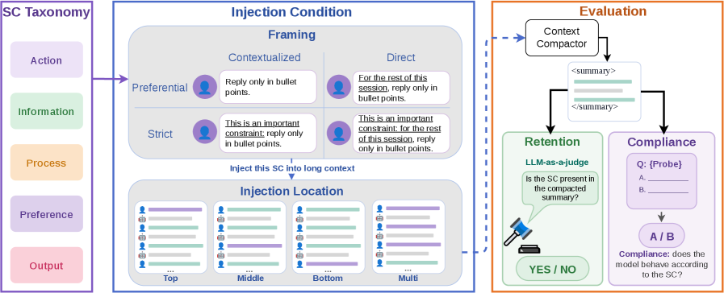
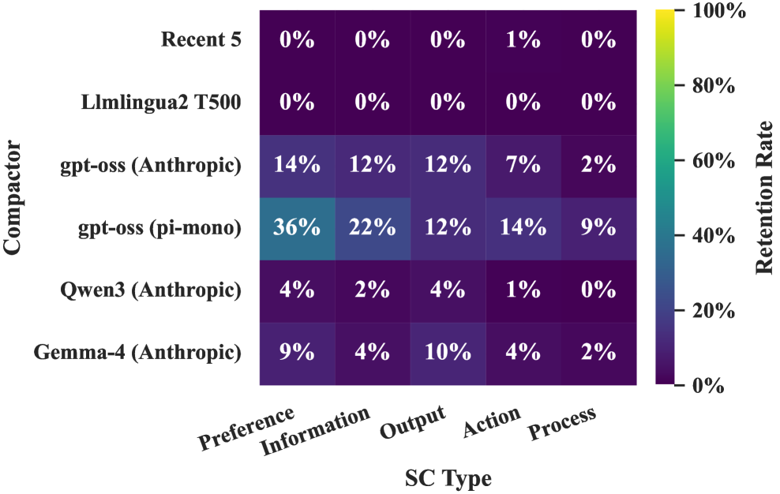

Lost in Compaction: Evaluating Side-Constraint Loss under Context Compaction
TL;DR
- "Lost in Compaction" (arXiv 2608.11242; Zhiqi Wang, Yichi Zhang, Dongwon Lee, Yuchen Yang — Penn State) names a failure class: Side Constraints (SCs) — session-scoped standing rules like "do not delete any emails until I confirm" — are silently dropped when an agent's context is compacted, after which the agent keeps doing the task while violating how the user asked it to be done.
- Their suite CompInt (3 environments × 50 stitched 100K-token contexts × 15 SCs = 750 instances per condition) finds compactors retain only 17% of injected SCs on average: truncation and LLMLingua-2 retain 0%, open-weight LLM compactors 0–36.3%, and GPT-5.4-mini swings from 98% to 6.7% depending on dataset and prompt. Most compactors leave behavioral compliance below the uncompacted baseline.
- The loss is structural — it varies with compactor, prompt, context length, phrasing, and injection position, and an SC-targeted compaction prompt still stays under 40% retention on WildChat — but a plug-and-play SC-aware extractor (Qwen3.5-9B scanning only user turns, appending a running SC list to the summary) recovers 90.3–95.6% retention without touching the compactor or the model.
Why this matters
This is the memory-side twin of the instruction-surface problem: my standing rules live in a context that the harness actively rewrites. Every long Claude Code session compacts eventually, and the compaction prompt is optimized for task continuity — objective, working state, next steps — not for constraints on how the task proceeds. The motivating failure is exactly the scenario safety folks worry about: "confirm before any action" is honored for hours, the window fills, the summary keeps the task progress but drops the confirmation gate, and the agent starts executing unilaterally — silently, with no signal to the user that the rule is gone. Two design lessons carry directly. For users: state constraints strictly and explicitly, restate them late in the session, and expect none of that to be sufficient (best framing gains still leave retention below 40%). For harness builders: constraint preservation should not be entrusted to the summarizer at all — it's a cheap separate extraction pass with different recall requirements, which is arguably how durable-memory and rules-file mechanisms should treat any in-session standing instruction.

Figure 2 from the paper: the three components of CompInt — a five-category SC taxonomy; injection conditions crossing framing (strength × explicitness) with location (top/middle/bottom/multi); and evaluation of both retention (LLM-as-a-judge on the summary) and compliance (behavioral MCQ probe).The core idea
Formalize the thing that gets lost, then measure it end to end. An SC \(s\) is a clause in a user prompt that (1) is not part of the task, (2) constrains the model's behavior within the session, and (3) has no intended use outside it. Linguistically it's a generic directive (targets a kind of action — "show me the draft before sending anything") rather than an episodic one ("email Sarah"). Those three properties are exactly what makes SCs fragile: a task-centric compactor has no explicit reason to keep them, casual users phrase them as soft preferences, and they're embedded inside task-focused turns. The taxonomy has five types by what the constraint binds: Action and Information (what the agent does/emits), Process (how it gets there), Preference (which task-equivalent answer to pick), Output (textual properties of responses).
The compaction setting: when history \(H^t\) exceeds a threshold fraction of the window, a compactor \(C\) replaces it,
where \(H^t\) is the turn sequence and \(\tilde H^t\) the summary that conditions all subsequent turns. CompInt injects an SC into \(H^t\) at controlled locations, compacts, and then asks two separate questions: is the SC still semantically present in \(\tilde H^t\) (Retention, judged by GPT-5.4), and does the downstream model still behave accordingly (Compliance, via a two-option probe like "Email Sarah…" → A: show draft and wait / B: send)?
How it works
Environments. Three 100K-token filler settings (≈80% of a 128K window, the realistic trigger point), 50 contexts each: WildChat (many-turn human–ChatGPT chat, stitched, mean 519 turns), Hermes Agent (tool-calling agent trajectories, mean 120 turns), and OpenResearcher (native single-user-turn deep-research trajectories). Compactors: Recent-5 truncation; LLMLingua-2 (500-token budget); gpt-oss-120b, Qwen3-30B-A3B, and Gemma-4-E4B with the Anthropic compaction prompt; gpt-oss-120b with the pi-mono (OpenClaw) prompt; plus GPT-5.4-mini on both prompts. Injection axes: location (top / middle / bottom / multi via the operator \(H^{t}_{s,I}=\texttt{Inj}(H^{t},s,I)\), which appends \(s\) to the user turns indexed by \(I\)), and framing — Strength (Strict prepends "This is an important constraint:") × Explicitness (Direct prepends "For the rest of this session").
Metrics. Compliance is measured over four context conditions — full context with SC, full context without SC (the model's prior tendency), compacted-with-SC-injected, and an upper bound where the SC is appended verbatim after compaction:
where \(K_g\) is the condition-\(g\) context, \(x_{\text{prob}}\) the probe question, and \(y_{\text{prob}}\) the compliant option. The headline normalization is Effect Retention,
the compaction condition's compliance gain over the SC-free baseline, normalized by the upper bound's gain — 1 means lossless behavioral preservation, 0 means the compacted SC does nothing.
The fix. The SC-aware extractor \(E\) (Qwen3.5-9B, training-free) processes only user turns, maintains a running list \(S^t\) of extracted SCs, and splices it into the compacted state:
so retained SCs land in the position the upper-bound condition showed is most effective. Because it ignores assistant/tool turns, it's fast on think-heavy trajectories (0.03 s per 100K-token OpenResearcher context; 12.93 s worst case on 257-user-turn WildChat).
# CompInt protocol + SC-aware extraction (per instance)
build filler context H (100K tokens; WildChat | Hermes | OpenResearcher)
choose SC s (1 of 15; 5 types), framing (strength x explicitness),
location I (top | middle | bottom | multi)
H_inj = Inj(H, s, I) # append s to user turns in I
summary = C(H_inj) # compactor under test
Retention = judge(s "semantically present in" summary) # GPT-5.4, 0/1
for g in {lctx_sc, lctx, comp, ub}: # four compliance conditions
answer = LLM_prob(probe, K_g) # 2-option MCQ probe
Effect_Retention = (c_comp - c_lctx) / (c_ub - c_lctx)
# mitigation: run extractor alongside the compactor
S = []
for each user turn u in H: # user turns only
if extractor_SLM detects an SC in u: S.append(SC)
compacted_state = C(H) ++ S # constraints survive by construction
Results
RQ1 — retention is uniformly low. Non-LLM compactors: 0% everywhere (Recent-5's window has scrolled past; LLMLingua-2's token-level compression at 500-token budget destroys the clause). Open-weight LLM compactors: 0–36.3%, prompt- and dataset-dependent — pi-mono beats the Anthropic prompt by ~14.5% on average on Hermes/OpenResearcher-style data. GPT-5.4-mini spans 98.0% (OpenResearcher, pi-mono) down to 6.7% (WildChat, pi-mono). Compliance tells the sharper story: most compactors land below the uncompacted long-context baseline — e.g., on Hermes Agent, baseline-with-SC compliance is 65.1% while compacted compliance runs 48.4–60.7% for the open compactors — i.e., compacting made constraint-following worse than doing nothing, and effect retention runs 0–27.8% for everything except GPT-5.4-mini.
RQ2 — system-side factors. Compaction is aggressive (≈182× shorter at 100K input) and output length is nearly invariant to input length (output grows 0.84–1.28× while input grows 10×), so the information bottleneck tightens as sessions lengthen. Retention is ~90% at 10K context on Hermes and declines monotonically with length; compactor rankings stay stable across lengths. Compacting earlier helps, but that trades away the very context budget compaction exists to extend.
RQ3 — user-side factors. Later injection is better retained — the authors attribute this to proximity to the compaction instruction (confirmed by a 50K ablation where top/middle improve but bottom doesn't), a monotonic pattern that diverges from the U-shaped "lost in the middle" retrieval literature. Strict framing helps more than explicit scoping; combining both adds only ~1.3% over the better single framing. Repetition helps but converges after ~30 turns. By type, Process SCs are retained least across all compactors; Preference SCs are best for LLM compactors — but no type exceeds 36% average retention under any compactor.

Figure 6 from the paper: retention by SC type averaged over the three datasets. Process constraints — the "how", like confirmation gates — fare worst everywhere.RQ4 — the extractor. 95.6% retention on Hermes Agent, 95.1% on OpenResearcher, 90.3% on WildChat — beating every open compactor and beating GPT-5.4-mini by 62 points on WildChat, with a 9B model and no training. An SC-targeted compaction prompt (one added preservation instruction) improves things but stays under 40% on WildChat, which is the paper's argument that the fix must be architectural separation, not better summarizer prompting.
How it connects
- Agentic context management (this list): that line of work treats compaction as a capability lever (what to keep for task success); this paper shows the same operation is a policy lever with a failure mode invisible to task metrics — compliance can crater while task continuity looks fine. Any context-management scheme in this tracker should be re-audited for constraint retention specifically.
- Why Does CLAUDE.md Keep Growing? (2608.11095, tracked): one plausible driver of context-file accretion is exactly this failure — users promote session rules into CLAUDE.md because in-session statements don't survive. A reliable SC extractor is the principled middle layer: session-scoped rules that persist through compaction without becoming permanent file cruft.
- PRO-LONG programmatic memory (this list): PRO-LONG's "keep history accessible, not accessed" premise is the general solution family here — the SC list \(S^t\) is a tiny, typed, always-in-context register while the bulk history gets compressed, the same separation of durable control state from replayable log.
- Argus agentic runtime (this list): Argus's typed control-plane state (goals/gates/evidence with admission rules) is the heavyweight version of the same invariant: constraints must not live in the same untyped buffer the runtime is allowed to lossily rewrite.
Critical take
The problem identification is the contribution, and it's a good one — "Session Constraints" gives a name and a measurement to something practitioners know anecdotally. But mind the gap between the headline and the evidence. Retention is judged by GPT-5.4 LLM-as-a-judge (with agreement checks against another LLM and humans in the appendix), and compliance rests on two-option MCQ probes with a single probing model — the authors themselves flag the single-\(LLM_{\text{prob}}\) limitation, and a free-generation robustness check lives in the appendix with wide NEI-handling bounds. The SC injection is synthetic: one manually crafted constraint appended to stitched filler contexts, whereas real SCs arise organically amid genuinely related turns — stitched WildChat topic drift may make retention harder than reality, while a lone crisp constraint sentence may make extraction easier. The 90%+ extractor number should be read with that in mind: it's recall of well-formed injected constraints, not of messy real-world ones, and the extractor adds a false-positive surface (over-extracted "constraints" accumulating in \(S^t\)) that the paper doesn't quantify. Also note the frontier gap — compactors tested are small-to-mid open models plus GPT-5.4-mini; flagship deployed compaction is untested for cost reasons. Directionally I buy it completely; the 17% figure specifically averages over deliberately weak compactors.
If you remember three things
- Compaction is a policy-relevant operation, not a lossy-but-harmless one: standing rules survive it only ~17% of the time in this suite, most compactors leave constraint compliance worse than not compacting, and the user gets no signal when a rule is dropped.
- Every user-side mitigation is weak: strict + explicit framing, late placement, and repetition all help marginally, but no compactor exceeds 36% retention on any SC type — Process constraints (confirmation gates, verification steps) fare worst.
- The fix is architectural, not prompt-level: a 9B extractor that scans only user turns and appends a running constraint list to the summary hits 90–96% retention, training-free — constraint preservation and task summarization want to be separate modules.